Sumário
Visão Geral
Bom dia a todos. Meu nome é Pietra, e sou aluna do primeiro ano de informática do IFES. Hoje, iremos apresentar os Impactos da Inteligência Artificial na Sociedade e no Meio Ambiente.
Nosso grupo de apresentação é composto por Laís, Gabriel, Thainá, Ana Carolina, Bernardo e Pietra.
A Inteligência Artificial, ou IA, está cada vez mais presente em nossas vidas diárias. Isso mudou a maneira como estudamos, trabalhamos e interagimos com a tecnologia. Embora traga muitos benefícios, como facilitar o acesso à informação, seu crescimento também causa impactos sociais e ambientais.
Um dos principais problemas está relacionado aos data centers. São grandes estruturas responsáveis por operar e armazenar sistemas de IA. Esses lugares têm milhares de servidores que consomem muita energia e precisam de sistemas de resfriamento para evitar o superaquecimento, o que também pode exigir grandes quantidades de água.
Ao mesmo tempo, a IA também pode ajudar com energia renovável. Por exemplo, pode prever a produção de energia solar e eólica. Portanto, o problema não é simplesmente a existência da IA, mas como ela é desenvolvida e usada. O uso de energia renovável, equipamentos mais eficientes, redução de resíduos e aumento da transparência podem ajudar a reduzir seus impactos ambientais.
Portanto, podemos concluir que a Inteligência Artificial tem um grande potencial para transformar positivamente a sociedade, mas seu crescimento também traz consequências que não podem ser ignoradas. O principal desafio é encontrar um equilíbrio entre inovação e responsabilidade, garantindo que o desenvolvimento da tecnologia ocorra de forma consciente e sustentável, contribuindo para o progresso social, preservando o meio ambiente, a educação e a qualidade de vida.
Agora convidamos você a aprender mais sobre os impactos da Inteligência Artificial na sociedade e no meio ambiente.
Good morning, everyone. My name is Bernardo, and I am a student from the first year of Computing class at IFES. Today, our class will present the Impacts of Artificial Intelligence on Society and the Environment.
Our presentation group is composed of Laís, Gabriel, Thainá, Ana Carolina, Bernardo and Pietra.
Artificial Intelligence, or AI, is increasingly present in our daily lives. It has changed the way we study, work and interact with technology. Although it brings many benefits, such as making access to information easier, its growth also causes social and environmental impacts.
One of the main problems is related to data centers. They are large structures responsible for operating and storing AI systems. These places have thousands of servers that consume a lot of energy and need cooling systems to prevent overheating, which can also require large amounts of water.
At the same time, AI can also help with renewable energy. For example, it can predict the production of solar and wind energy. Therefore, the problem is not simply the existence of AI, but how it is developed and used. Using renewable energy, more efficient equipment, reducing waste and increasing transparency can help reduce its environmental impacts.
Therefore, we can conclude that Artificial Intelligence has great potential to positively transform society, but its growth also brings consequences that cannot be ignored. The main challenge is finding a balance between innovation and responsibility, ensuring that the development of technology occurs in a conscious and sustainable way, contributing to social progress while preserving the environment, education and quality of life.
We now invite you to learn more about the impacts of Artificial Intelligence on society and the environment.
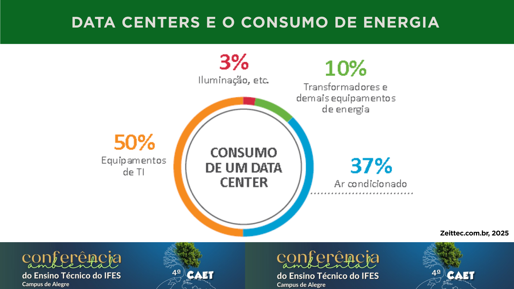

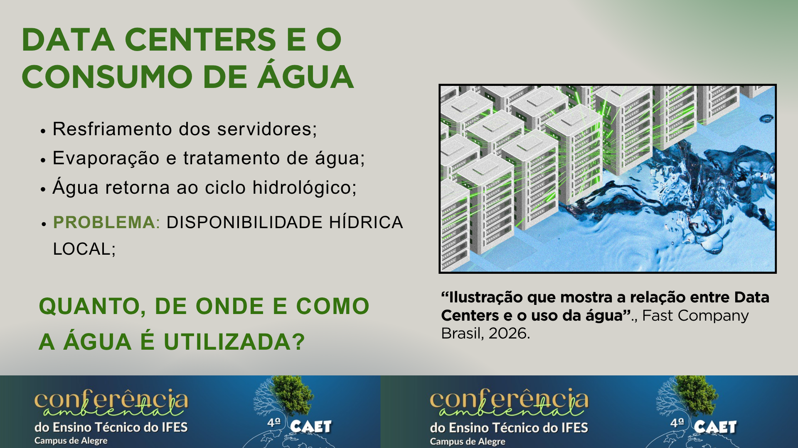
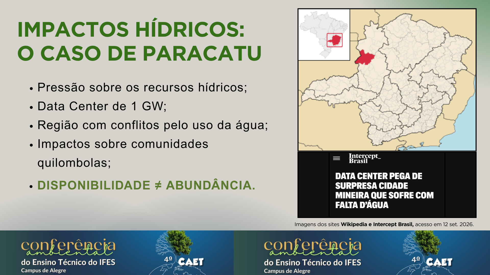
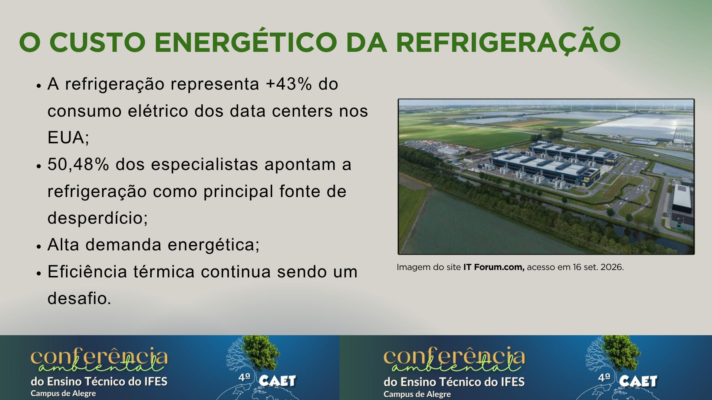
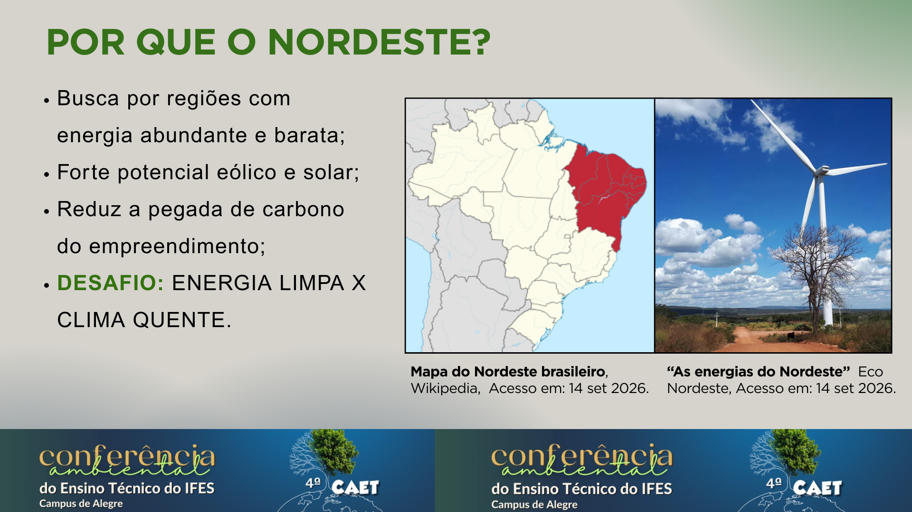
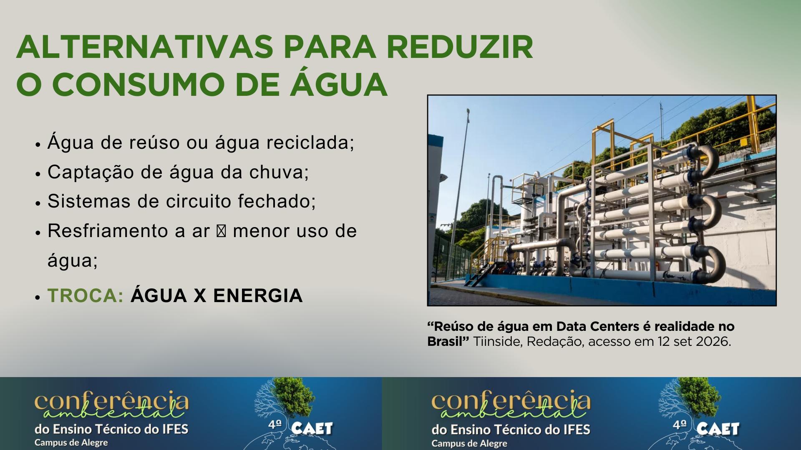
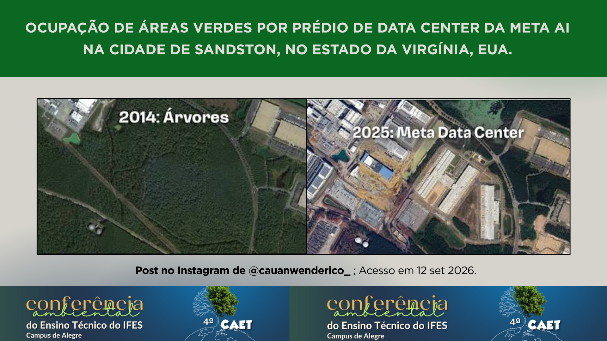
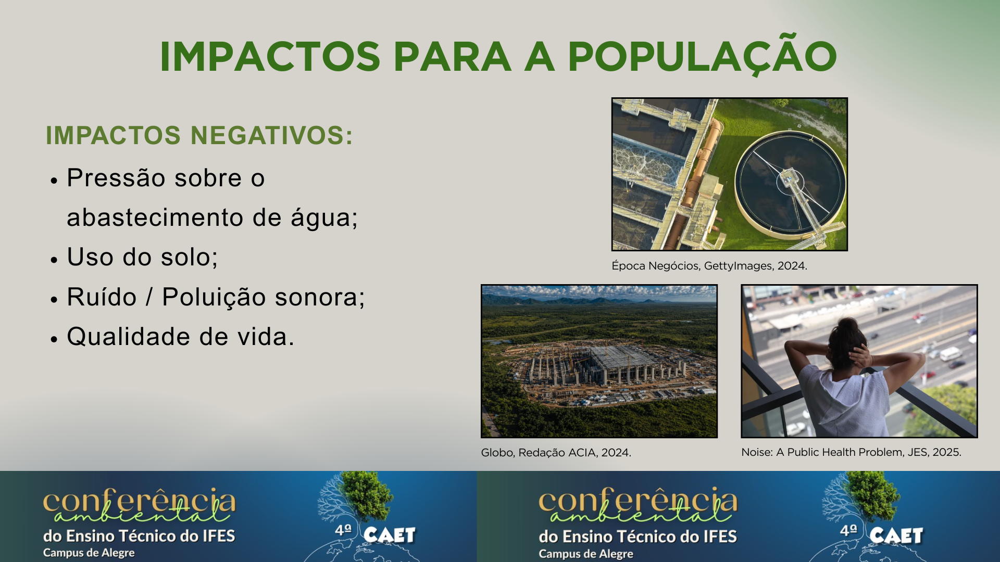
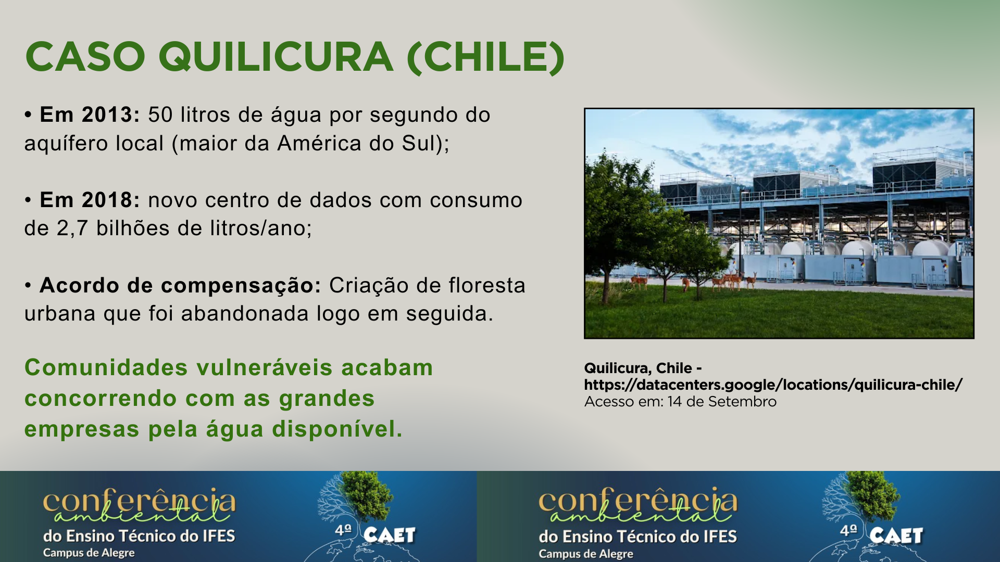
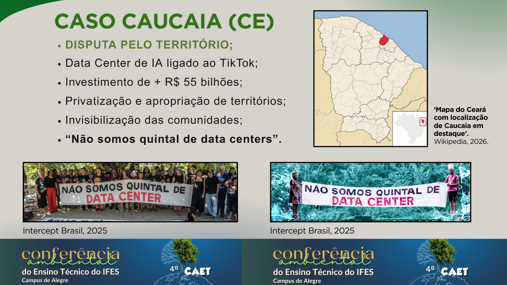
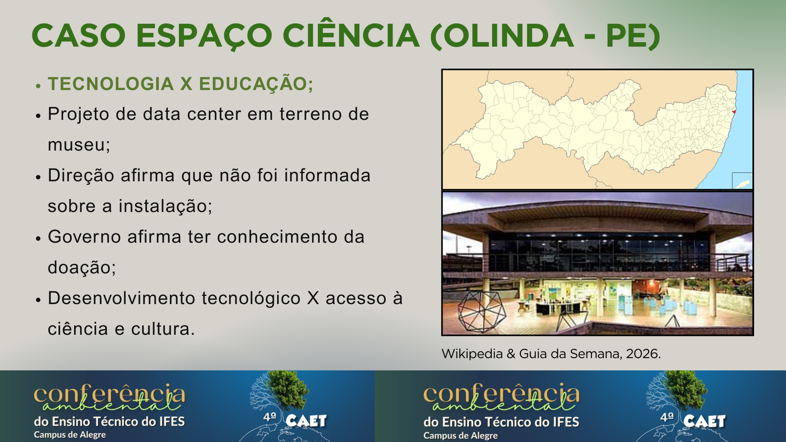
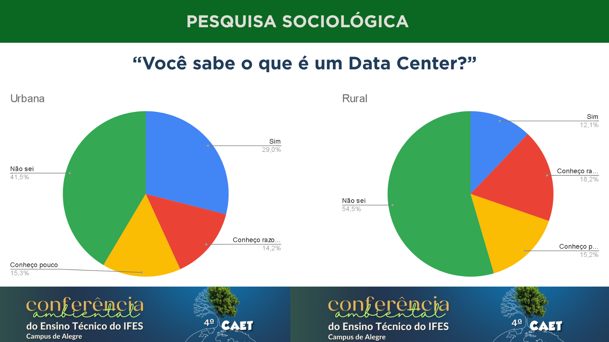
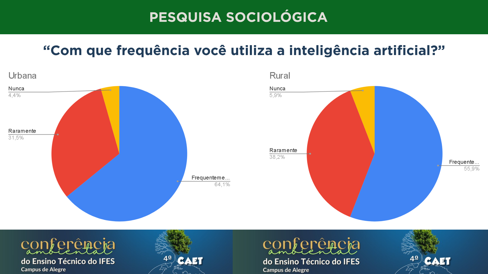
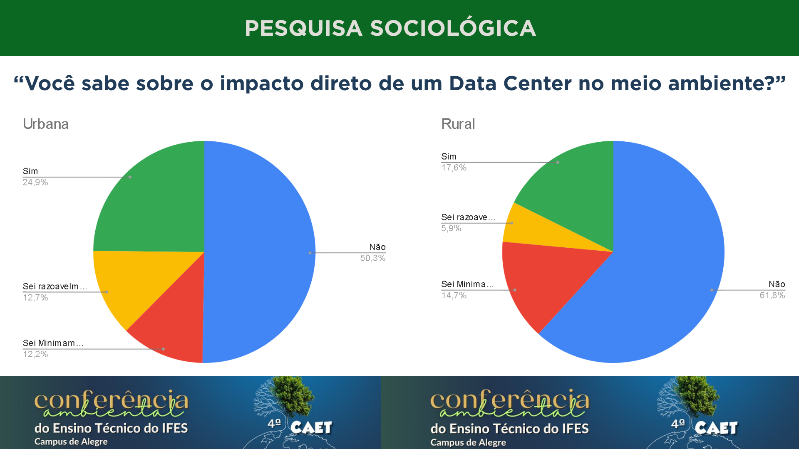
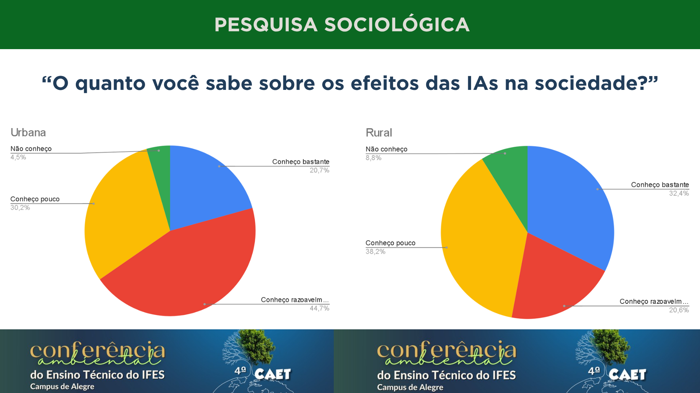
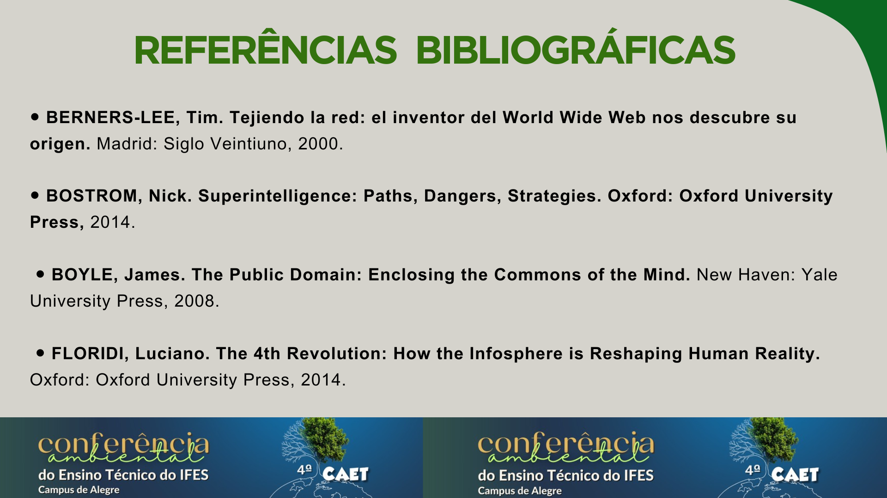